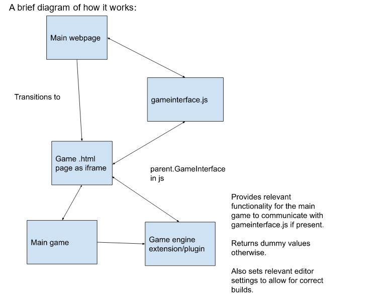

This is overdue, but towards the end of development… my hands started to hurt when typing. They still hurt sometimes. But this is important, so I’ll just… have to take this slow.
Archive.org has some Whose Line Is It Anyways content. Highly recommend. Wayne Brady and Greg Proops are too good for the rest of them.
I also recommend reading TODO.txt in the repository for suggested next steps: https://github.com/GDACollab/Microgame-Jam-GHGT-Framework
Or you can come talk to me (Tyler, that’s me. If you don’t know who me is, come check me out: https://ambiguousname.github.io/)
A brief diagram of how it works:
